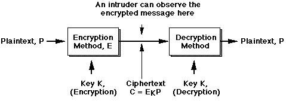
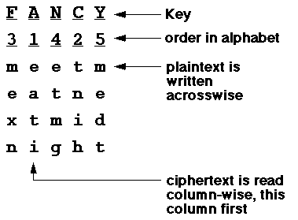
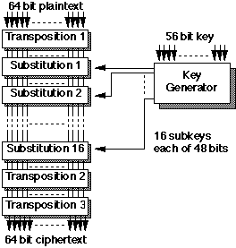
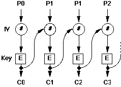

This is called eavesdropping or packet sniffing. Once an eavesdropper has copies of all the frames he desires, he can easily view the application data they contain.
As most current application protocols send data across the Internet as "strings of printable ASCII" -- ie, the data is sent as plaintext. Thus it is simple to observe messages transmitted by others, if one has access to an appropriate point in the network. This is the origin of the assertion that "The Internet is insecure". The solution is encryption -- encoding the message so that it is unintelligible to the intruder, but can be easily "unscrambled" by the intended recipient. This is secure communication.
An area where this insecurity can present a Really Serious Problem is password authentication. Many application protocols (eg Telnet, FTP, POP3, etc) send usernames and passwords across the network as plain text, exactly the same as other data -- ie, unencrypted. You need to always be aware of this possibility!Encryption is a vast technical, scientific and political topic, tightly intertwined with the history of computing itself.
The security of the ciphertext depends on two factors:
There are many examples of this technique. Most fall into the general category of monoalphabetic substitution, where the output alphabet is the same as the input. For example, in the classic Caesar Cipher, letters of the alphabet were shifted by 3 positions, hence a becomes D, b becomes E, etc. In this case, the key could be said to be "3" -- the distance by which each character was translated. A more complex example uses a "random" reordering of the letters:
hence bad is encrypted as WQR[1].plaintext: a b c d e f g h i j k l m n o p q r s t u v w x y z ciphertext: Q W E R T Y U I O P A S D F G H J K L Z X C V B N M
This type of cipher turns out to be relatively easy to break,
despite the huge (26!) keyspace, by using known statistical
characteristics of English (or other languages), eg:
Most programming languages provide an XOR function. To "encrypt" (for example) a byte of data, we could do (in Java, all variables of Java primitive type "byte"):
A B A XOR B 0 0 0 0 1 1 1 0 1 1 1 0
The symmetric aspect of XOR comes from the fact that to recover the plain text, we can simply repeat the operation on the ciphertext:cipher = plainText ^ key;
Symmetic encryption and decyption (ie, using the same algorithm and key to both encrypt and decrypt) is a characteristic of all production "single-key" systems, unlike "Public Key" systems. The XOR function is a key component in these "Real World" algorithms.plainText = cipher ^ key;
Hence, the ciphertext is:
Multi-stage transposition was the basis of the famous Enigma encryption machine used by German armed forces and famously cracked by the British intelligence service at Bletchely Park in the second world war.EATITNIHMEXNETMGMEDT
Neither substitution nor transposition ciphers alone are regarded as secure for serious modern use. The current approach is to combine both techniques, on binary data and with much more complex algorithms (see DES).
For example, convert both the plaintext and the key to bit strings (which will be, necessarily, of the same length). Apply the XOR function function bitwise between the strings, giving the ciphertext. The recipient can then apply the same key to the ciphertext using XOR function and thus recover the original plaintext.
This is, in every respect, unbreakable, but rather impractical for real-world use in most cases. Some reasons:

The effectiveness of DES is based on the complexity of the 19 stages. In the above diagram, two identical 64-bit plaintexts will result in identical ciphertexts. This is called the Electronic Code Book (ECB) mode of operation.
In the Chain Block Cipher (CBC) mode, each block of plaintext is exclusive-ORed with the ciphertext output from the previous encryption operation. Thus, the next block of ciphertext is a function of its corresponding plaintext, the 56-bit key and the previous block of ciphertext. Identical blocks of plaintext no longer generate identical ciphertext, which makes this system much more difficult to break.
The CBC mode of DES is the normal technique used for encryption in modern business data communications. A variation on CBC is used where the message may not be a multiple of 64 bits, or where interactive (character at a time) encryption and decryption is desired. This is called Cypher Feedback Mode (CBM), and uses shift registers to permit one byte at a time to be encrypted or decrypted.